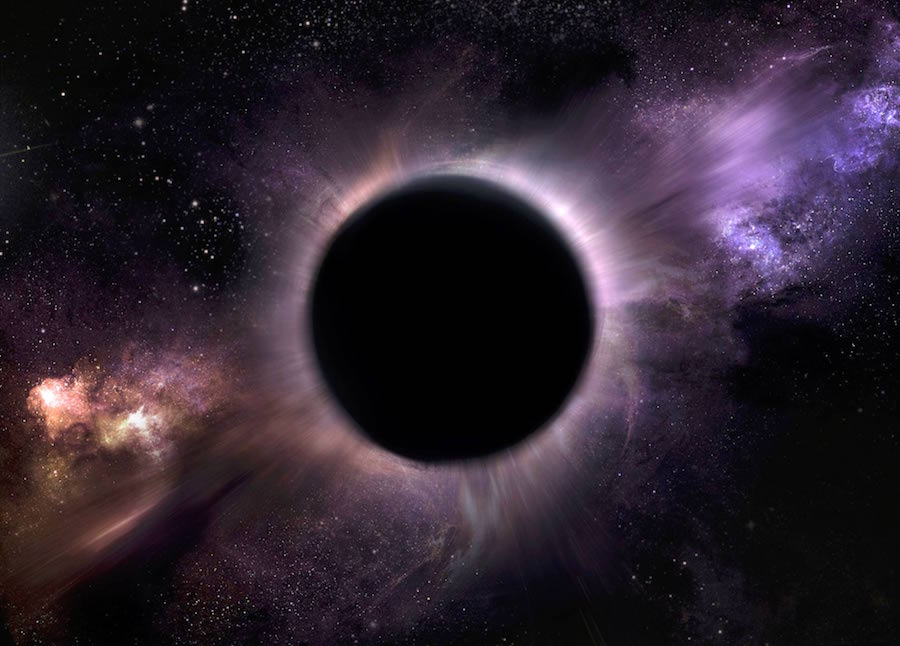

A black hole is anything but empty space. Rather, it is a great amount of matter packed into a very small area - think of a star ten times more massive than the Sun squeezed into a sphere approximately the diameter of New York City. The result is a gravitational field so strong that nothing, not even light, can escape. In recent years, NASA instruments have painted a new picture of these strange objects that are, to many, the most fascinating objects in space.
 The idea of an object in space so massive and dense that light could not escape it has been around for centuries. Most famously, black holes were predicted by Einstein's theory of general relativity, which showed that when a massive star dies, it leaves behind a small, dense remnant core. If the core's mass is more than about three times the mass of the Sun, the equations showed, the force of gravity overwhelms all other forces and produces a black hole.